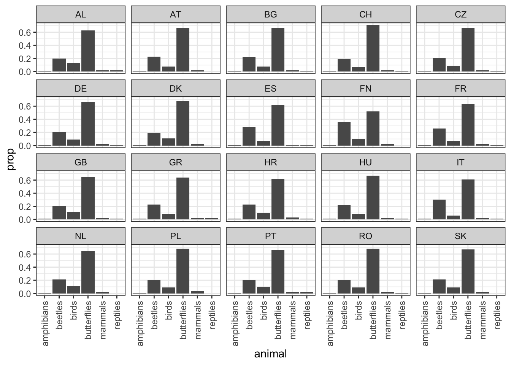

Code
library(tidyverse)
library(lavaan)
library(ggdag)In this chapter we’ll work through another example of the Traditional CFA Workflow to get more practice. We’ll also introduce the concept of ‘Modification Indexes’, which researchers often use to improve their model goodness of fit in a way that seems a bit suss to me. Probably a good thing to know about.
library(tidyverse)
library(lavaan)
library(ggdag)Here’s a fun example from the Wetland and Aquatic Research Center of the U.S. Geological Survey: given counts of different types of animals, can we fit a convincing CFA model for ‘diversity’? In other words: is the correlation structure of all my counts of various types of animals consistent with the possibility that those counts are confounded by a single unobserved thing called ‘diversity’?
dat_raw <- read.csv('../data/grace/SEM_09_2-Ex1_CFA_exercise_data.csv')
dat_clean <- dat_raw %>%
janitor::clean_names()Just for fun let’s see if the relative proportions of the different animals varies between countries:
### Proportions
dat_clean %>%
pivot_longer(
cols = !matches("^c"),
names_to = "animal",
values_to = "count"
) %>%
group_by(country) %>%
mutate(
total = sum(count),
prop = round(count / total, 2)
) %>%
ungroup() %>%
ggplot() +
geom_bar(aes(x = animal, y = prop), stat = "identity") +
theme_bw() +
theme(axis.text.x = element_text(angle = 90, vjust = 0.5, hjust=1)) +
facet_wrap(~country)
The proportions are pretty stable. Finland seems like the weirdest one, and it isn’t even that weird.
The hypothesis we want to test here is simply that all of these counts are confounded by a single unmeasured ‘biodiversity’ variable. This is straightforward to fit:
h1.definition <-
'diversity =~ mammals + birds + amphibians + reptiles + beetles + butterflies'
h1.fit <- cfa(
data = dat_clean %>% select(-country) %>% scale(),
model = h1.definition
)
h1.summary <- summary(h1.fit)
h1.summarylavaan 0.6.16 ended normally after 23 iterations
Estimator ML
Optimization method NLMINB
Number of model parameters 12
Number of observations 20
Model Test User Model:
Test statistic 20.817
Degrees of freedom 9
P-value (Chi-square) 0.013
Parameter Estimates:
Standard errors Standard
Information Expected
Information saturated (h1) model Structured
Latent Variables:
Estimate Std.Err z-value P(>|z|)
diversity =~
mammals 1.000
birds 0.825 0.277 2.978 0.003
amphibians 1.115 0.260 4.281 0.000
reptiles 0.780 0.279 2.793 0.005
beetles 1.135 0.259 4.380 0.000
butterflies 1.261 0.254 4.960 0.000
Variances:
Estimate Std.Err z-value P(>|z|)
.mammals 0.387 0.131 2.958 0.003
.birds 0.566 0.184 3.073 0.002
.amphibians 0.250 0.092 2.727 0.006
.reptiles 0.608 0.197 3.089 0.002
.beetles 0.224 0.085 2.645 0.008
.butterflies 0.054 0.054 1.010 0.313
diversity 0.563 0.278 2.025 0.043Let’s have a look at the same 4 goodness-of-fit measures we used in the previous example. We can bring them all together with a nice utility function:
### Define a custom function
fit_measures <- function(fit){
summary <- summary(fit, fit.measures = TRUE, standardized = TRUE)
res <- list(
# Chi-Squared
chi_squared = tibble(
Test = "standard chi-squared",
`DF` = summary$test$standard$df,
`Test Statistic` = round(summary$test$standard$stat, 2),
`p-value` = summary$test$standard$pvalue) %>%
mutate(across(everything(), as.character)) %>%
pivot_longer(everything()),
# RMSEA
rmsea = summary$fit %>%
as_tibble(rownames = "stat") %>%
filter(str_detect(stat, "rmsea")),
# CFI and TLI
cfi_tli = summary$fit %>%
as_tibble(rownames = "stat") %>%
filter(str_detect(stat, "cfi|tli"))
)
res
}
### Call the function, then send its outputs to clean tables
fit_measures(h1.fit) %>%
map(knitr::kable)$chi_squared
|name |value |
|:--------------|:--------------------|
|Test |standard chi-squared |
|DF |9 |
|Test Statistic |20.82 |
|p-value |0.0134888288206897 |
$rmsea
|stat | value|
|:---------------------|----------:|
|rmsea | 0.25622117|
|rmsea.ci.lower | 0.11034617|
|rmsea.ci.upper | 0.40224444|
|rmsea.ci.level | 0.90000000|
|rmsea.pvalue | 0.01890337|
|rmsea.close.h0 | 0.05000000|
|rmsea.notclose.pvalue | 0.97055608|
|rmsea.notclose.h0 | 0.08000000|
$cfi_tli
|stat | value|
|:----|---------:|
|cfi | 0.8695573|
|tli | 0.7825955|The model isn’t fitting very well – Chi-Squared is highly statistically significant (we fail to reject the null hypothesis that there is residual variance left to explain), RMSEA is well above its conventional threshold, and CFI and TLI are both well below their conventional thresholds.
Here (Grace?) introduces a new method for tweaking our CFA model to improve goodness of fit. The idea is that we can use fancy math to ask “if I took a certain fixed parameter from my model definition and allowed it to be freely estimated, how much would my model’s chi-squared goodness of fit change?” People like to take this estimated change in goodness-of-fit and call it a modification index. As Brown (2006) puts it:
“The modification index reflects an approximation of how much the overall model \(χ^2\) would decrease if the fixed or constrained parameter was freely estimated.”
Apparently conventional cutoff for a ‘good’ modification index is 3.84. So to get some ideas on how we might improve our goodness-of-fit, let’s print out the modification indexes for each of the fixed parameters in the model and see which of them pass that threshold:
# Get the estimated change in chi-squared for each fixed parameter
modindices(h1.fit) %>%
# Arrange them in order of modification index
arrange(desc(mi)) %>%
select(lhs, op, rhs, mi) %>%
knitr::kable(digits = 2)| lhs | op | rhs | mi |
|---|---|---|---|
| birds | ~~ | beetles | 4.44 |
| birds | ~~ | amphibians | 3.99 |
| mammals | ~~ | butterflies | 2.84 |
| beetles | ~~ | butterflies | 2.78 |
| mammals | ~~ | amphibians | 2.31 |
| birds | ~~ | reptiles | 2.05 |
| amphibians | ~~ | butterflies | 1.72 |
| birds | ~~ | butterflies | 1.55 |
| mammals | ~~ | reptiles | 1.29 |
| mammals | ~~ | birds | 1.20 |
| amphibians | ~~ | beetles | 0.58 |
| mammals | ~~ | beetles | 0.38 |
| reptiles | ~~ | butterflies | 0.22 |
| reptiles | ~~ | beetles | 0.15 |
| amphibians | ~~ | reptiles | 0.14 |
Based on the operation symbol “~~”, it seems like all of the modification indexes correspond to residual correlations between observed variables. This teaches me something about CFA models! I guess in the typical CFA model we fix the residual correlations to 0? This helps me understand why the Bayesian CFA model as implemented in brms specifies rescor = FALSE . I was confused about this!
Actually, I just realized Gorsuch (1983) already explained this to me! Think back to where he showed us the definition of the ‘Common Factor Model’:
\(R_{vv} = PR_{ff}P' + U_{vv}\)
And remember how Gorsuch specified that \(U_{vv}\) is assumed to be a diagonal matrix, IE the residual correlations is assumed to be uncorrelated for each variable. This is the whole thing about the ‘unique factors’, IE the error terms, of the linear models of each measured variable are gonna be uncorrelated. This recorded seminar and notes from UCLA give a nice clear walkthrough of the notation in a slightly different form from Gorsuch (1983).
From the DAGs perspective of CFA, assuming uncorrelated residuals sort of makes sense to me: if I want to convince you that my measured variables are all confounded by the same single unmeasured variable, then I think fixing the residual errors at 0 is a way of committing my model to the idea that there aren’t other unmeasured variables confounding certain of my measured guys. It is a strong assumption that, if it holds up, provides better evidence that my variables really truly are just confounded by a single unmeasured thing.
So I guess I could write out this standard CFA model in a more McElreath fashion like so:
[ \[\begin{align*} \begin{bmatrix} \text{mammals}_i \\ \text{birds}_i \\ \text{amphibians}_i \\ \text{reptiles}_i \\ \text{beetles}_i \\ \end{bmatrix} & \sim \operatorname{MVNormal} \left( \begin{bmatrix} \mu_{mammals} \\ \mu_{birds} \\ \mu_{amphibians} \\ \mu_{reptiles} \\ \mu_{beetles} \end{bmatrix}, \mathbf{\Sigma} \right)\\ \mu_{mammals} & = \lambda_{mammals} F_i \\ \mu_{birds} & = \lambda_{birds} F_i \\ \mu_{amphibians} & = \lambda_{amphibians} F_i \\ \mu_{reptiles} & = \lambda_{reptiles} F_i \\ \mu_{beetles} & = \lambda_{beetles} F_i \\ \Sigma & = \begin{pmatrix} \sigma_{mammals}&0 &0 &0 &0 \\ 0 & \sigma_{birds} &0 &0 &0 \\ 0 & 0 & \sigma_{amphibians} &0 &0 \\ 0 & 0 & 0 & \sigma_{reptiles} &0 \\ 0 & 0 & 0 & 0 & \sigma_{beetles} \end{pmatrix} \\ \end{align*}\] ]
In human words: the observed counts of each of the 5 animal types are imagined to be drawn from a shared multivariate normal distribution. The mean of each dimension of that distribution is a linear function of a single shared factor, which we’re calling ‘biodiversity’. The variance of each dimension of that distribution is unique, and there is no covariance between the dimensions.
But now think back to our modification indexes: a few of them are saying that if we allow the residual covariances to be freely estimated rather than fixed at 0, then we can improve model fit by a whole lot. Specifically, if we allow the residual covariance between birds and beetles and/or between birds and amphibians to be freely estimated, then model fit as measured by the chi-squared statistic might be significantly improved. Here’s what the model is gonna look like now:
[ \[\begin{align*} \begin{bmatrix} \text{mammals}_i \\ \text{birds}_i \\ \text{amphibians}_i \\ \text{reptiles}_i \\ \text{beetles}_i \\ \end{bmatrix} & \sim \operatorname{MVNormal} \left( \begin{bmatrix} \mu_{mammals} \\ \mu_{birds} \\ \mu_{amphibians} \\ \mu_{reptiles} \\ \mu_{beetles} \end{bmatrix}, \mathbf{\Sigma} \right)\\ \mu_{mammals} & = \lambda_{mammals} F_i \\ \mu_{birds} & = \lambda_{birds} F_i \\ \mu_{amphibians} & = \lambda_{amphibians} F_i \\ \mu_{reptiles} & = \lambda_{reptiles} F_i \\ \mu_{beetles} & = \lambda_{beetles} F_i \\ \Sigma & = \begin{pmatrix} \sigma_{mammals}&0 &0 &0 &0 \\ 0 & \sigma_{birds} &\theta_\text{b\&a} &0 &\theta_\text{b\&b} \\ 0 &\theta_\text{b\&a} & \sigma_{amphibians} &0 &0 \\ 0 & 0 & 0 & \sigma_{reptiles} &0 \\ 0 &\theta_\text{b\&b} & 0 & 0 & \sigma_{beetles} \end{pmatrix} \\ \end{align*}\] ]
See how I’ve filled in the variance-covariance matrix of the likelihood to include a few more free parameters?
Actually, Grace proceeds by fitting two more models, one with each of these two candidate covariance parameters as freely fitting. Then he uses anova() to do a likelihood-ratio test for them. We can’t test all 3 models at once because models 2 and 3 aren’t nested with each other.
### Letting the covariance between birds and beetles be freely estimated
h2.definition <-
'diversity =~ mammals + birds + amphibians +
reptiles + beetles + butterflies
birds ~~ beetles'
h2.fit <- cfa(
data = dat_clean %>% select(-country) %>% scale(),
model = h2.definition
)
### Letting the covariance between birds and amphibians be freely estimated
h3.definition <-
'diversity =~ mammals + birds + amphibians +
reptiles + beetles + butterflies
birds ~~ amphibians'
h3.fit <- cfa(
data = dat_clean %>% select(-country) %>% scale(),
model = h3.definition
)
anova(h1.fit, h2.fit)
Chi-Squared Difference Test
Df AIC BIC Chisq Chisq diff RMSEA Df diff Pr(>Chisq)
h2.fit 8 270.81 283.76 16.013
h1.fit 9 273.62 285.56 20.817 4.804 0.43612 1 0.02839 *
---
Signif. codes: 0 '***' 0.001 '**' 0.01 '*' 0.05 '.' 0.1 ' ' 1anova(h1.fit, h3.fit)
Chi-Squared Difference Test
Df AIC BIC Chisq Chisq diff RMSEA Df diff Pr(>Chisq)
h3.fit 8 267.72 280.67 12.924
h1.fit 9 273.62 285.56 20.817 7.8934 0.58709 1 0.004961 **
---
Signif. codes: 0 '***' 0.001 '**' 0.01 '*' 0.05 '.' 0.1 ' ' 1Looks like model H3 has the lowest AIC and the more significant improvement in chi-squared fit. So let’s continue working with that one in the following sections.
We can do the same 5 checks of validity we used in the previous ‘Mastery and Performance’ example. Let’s start with the big summary printout:
summary.h3 <- summary(h3.fit, fit.measures = TRUE, standardized = TRUE)
summary.h3lavaan 0.6.16 ended normally after 25 iterations
Estimator ML
Optimization method NLMINB
Number of model parameters 13
Number of observations 20
Model Test User Model:
Test statistic 12.923
Degrees of freedom 8
P-value (Chi-square) 0.115
Model Test Baseline Model:
Test statistic 105.591
Degrees of freedom 15
P-value 0.000
User Model versus Baseline Model:
Comparative Fit Index (CFI) 0.946
Tucker-Lewis Index (TLI) 0.898
Loglikelihood and Information Criteria:
Loglikelihood user model (H0) -120.861
Loglikelihood unrestricted model (H1) -114.400
Akaike (AIC) 267.723
Bayesian (BIC) 280.667
Sample-size adjusted Bayesian (SABIC) 240.592
Root Mean Square Error of Approximation:
RMSEA 0.175
90 Percent confidence interval - lower 0.000
90 Percent confidence interval - upper 0.344
P-value H_0: RMSEA <= 0.050 0.138
P-value H_0: RMSEA >= 0.080 0.824
Standardized Root Mean Square Residual:
SRMR 0.055
Parameter Estimates:
Standard errors Standard
Information Expected
Information saturated (h1) model Structured
Latent Variables:
Estimate Std.Err z-value P(>|z|) Std.lv Std.all
diversity =~
mammals 1.000 0.706 0.725
birds 1.013 0.310 3.266 0.001 0.716 0.734
amphibians 1.209 0.306 3.956 0.000 0.854 0.876
reptiles 0.899 0.307 2.928 0.003 0.635 0.652
beetles 1.264 0.301 4.196 0.000 0.893 0.916
butterflies 1.261 0.301 4.187 0.000 0.891 0.914
Covariances:
Estimate Std.Err z-value P(>|z|) Std.lv Std.all
.birds ~~
.amphibians -0.245 0.094 -2.615 0.009 -0.245 -0.789
Variances:
Estimate Std.Err z-value P(>|z|) Std.lv Std.all
.mammals 0.451 0.148 3.048 0.002 0.451 0.475
.birds 0.438 0.152 2.877 0.004 0.438 0.461
.amphibians 0.221 0.090 2.451 0.014 0.221 0.232
.reptiles 0.546 0.177 3.087 0.002 0.546 0.575
.beetles 0.153 0.061 2.506 0.012 0.153 0.161
.butterflies 0.156 0.062 2.526 0.012 0.156 0.165
diversity 0.499 0.267 1.866 0.062 1.000 1.000The factor loadings are all highly statistically significant, which is the first thing to check to make sure nothing is going horribly wrong.
The standardized loadings are pretty big as well, but not super great for ‘reptiles’. Also there’s a lot of variance in the loadings, which is evidence that my simple DAG of confounding may not be perfect – there are other unmeasured variables influencing some of my animal counts to different degrees. I mean of course there are, but the degree to which this is apparent based on the factor loadings undermines my claims to convergent validity.
Next we can look at the standardized residual variances. Some of them look great, and all but ‘reptiles’ pass the threshold of 0.5.
I could look at the ‘reliability’ statistics too, but can’t be bothered right now. Onwards to another example!